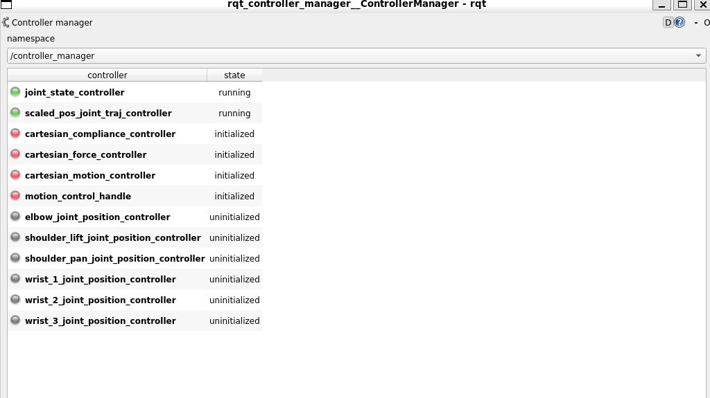
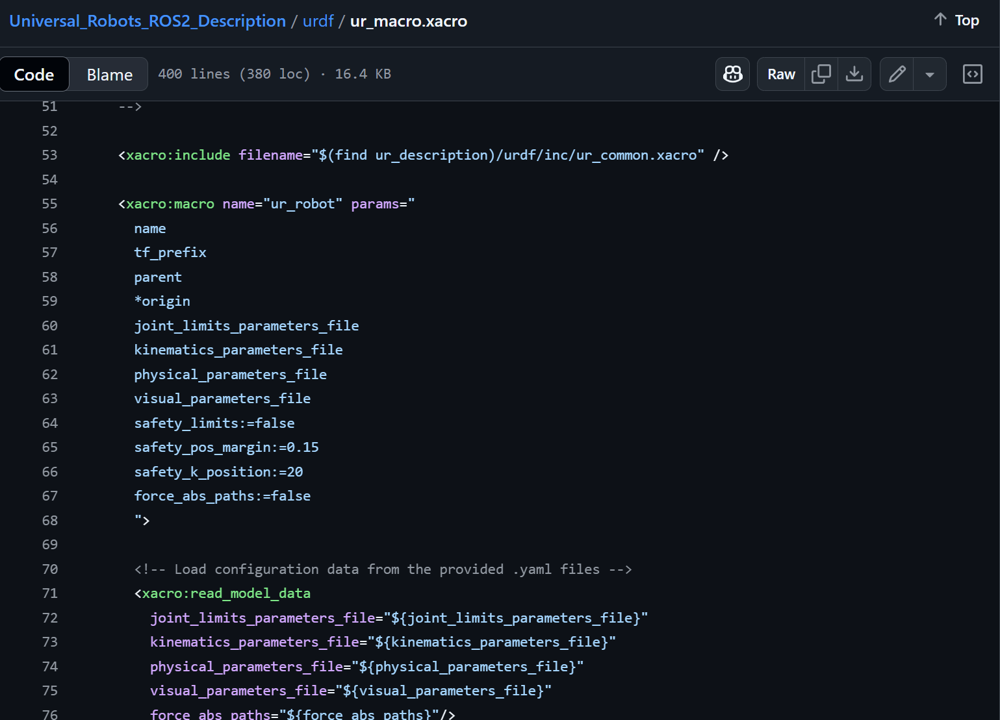
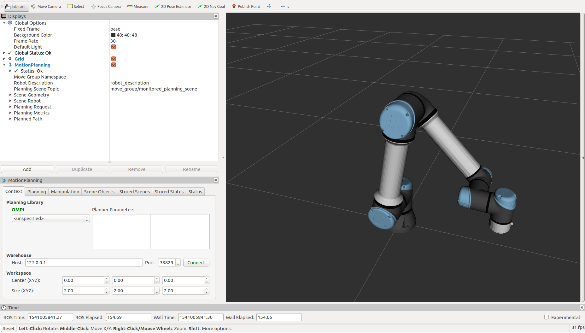

ゼロからのROS入門
シミュレータや実機との接続
大阪大学 中島優作
本スライドのゴール
- Bringupパッケージのlaunchファイルが書けるようになります
- 新しいロボットのROS対応で必要です
- シミュレーションやコントローラとの接続について理解できます
- Gazeboシミュレータ以外にMujocoシミュレータを使いたい場合や、力制御用等の公開コントローラを使いたい時に助けになります
シミュレータや実機との接続方法
ROSではros_control(ROS2はros2_control)というロボット制御のための標準アーキテクチャが用意されているので、これを使ってロボット制御、シミュレータや実機との接続を行います

ros_controlの概念図

- Controller manager: コントローラ管理
- 位置制御や力制御をここで切り替え
- シミュレータ(sim:=true) / ロボット実機(sim:=false)
復習：ROSでのロボットモデルの表示の仕組み

Rvizで見ているのはTF（joint_statesではない）
BringupのLaunchのざっくり解説
UR5eのLaunchファイルの例
<group if="$(arg sim)">
<include file="$(find robot_bringup)/launch/inc/load_contoller.launch">
<arg name="controller_config_file" value="$(arg controller_config_file)" />
<arg name="controllers" value="$(arg controllers)" />
</include>
<node name="fake_joint_driver" pkg="fake_joint_driver" type="fake_joint_driver_node" />
</group>
<group unless="$(arg sim)">
<include file="$(find robot_driver)/launch/robot_driver.launch" />
<node name="robot_state_publisher" pkg="robot_state_publisher" type="robot_state_publisher" />
</group>
<include file="$(find onolab_ur5e_moveit_config)/launch/move_group.launch"/>
<node name="rviz" pkg="rviz" type="rviz" args="-d $(arg rviz_config)" />
Launchファイル説明
- sim:=trueでシミュレータ用のロボットドライバを起動
- sim:=falseで実機のロボットドライバを起動
- ロボット制御用にMoveItを起動
- ロボット表示用にRvizを起動
ロボットアーム制御
ここではロボットアーム制御用のツールを紹介
アルゴリズムは「ロボットアーム制御とモーションプランニング」スライドで紹介
Controller Manager
- ロボット制御用のコントローラをプラグインで管理するツール
- GUIでの切り替えが便利(コードでも切り替え可能)
GUIを起動するコマンド
rosrun rqt_controller_manager rqt_controller_manager
Joint Trajectory Controller GUI
- アーム位置制御の基本コントローラがJointTrajectoryControllerです
- 専用GUIがあり動作確認で便利
rosrun rqt_joint_trajectory_controller rqt_joint_trajectory_controllerシミュレータの種類
①簡易シミュレータ
- ロボット動作確認のための簡易シミュレータ
- ロボットと周りの環境との接触は考慮されません(動作が軽い)
- 主に計算したモーションが正しいかの確認で使います
- ROS1：外部パッケージのfake_jointを使って実装
- ROS2：標準機能のMock Componentsで実装
②物理シミュレータ
- ロボットと周りの環境との接触等を含めた物理シミュレータ
- ロボットと周りの環境との接触も考慮します(計算重い、GPU必須)
- Gazebo、Mujocoといった物理シミュレータを使います
- 主にロボット学習のテスト環境やSim to Realで使います
※僕らが開発で普段使っているシミュレータは①です